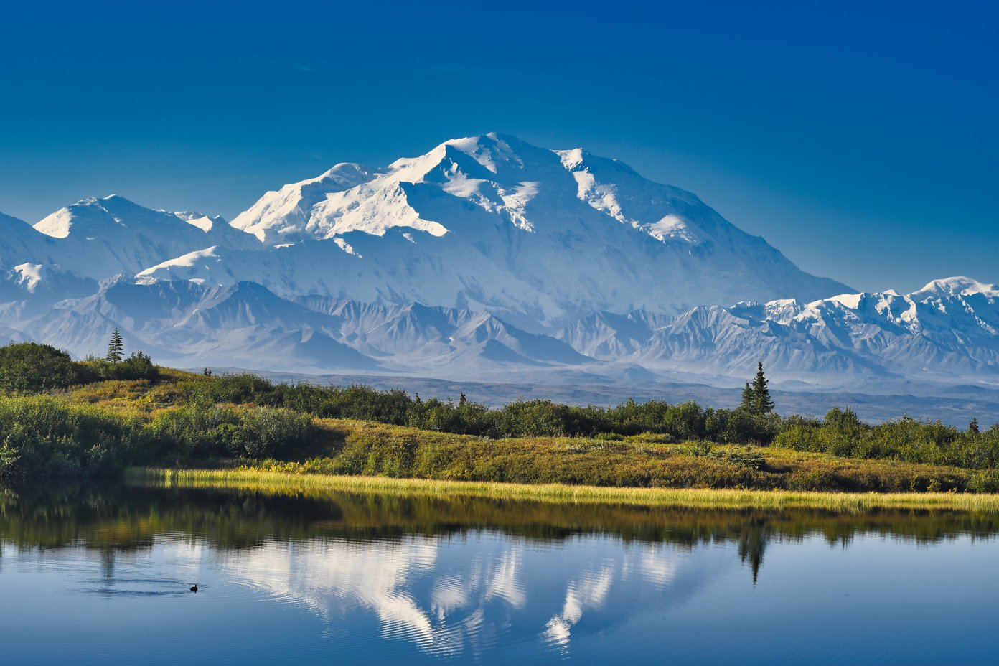

Glacier Bay
Glacier Bay, Alaska, is a stunning national park renowned for its dramatic glaciers, diverse wildlife, and breathtaking landscapes that showcase the power of nature's ice formations.
Denali National Park
Denali Park, Alaska, is home to North America's highest peak, offering visitors unparalleled wilderness experiences and breathtaking views of majestic mountains and diverse wildlife.
Katmai
Katmai National Park in Alaska is famous for its stunning volcanic landscapes, abundant brown bear populations, and the mesmerizing Valley of Ten Thousand Smokes, showcasing the power of nature and the effects of volcanic activity.